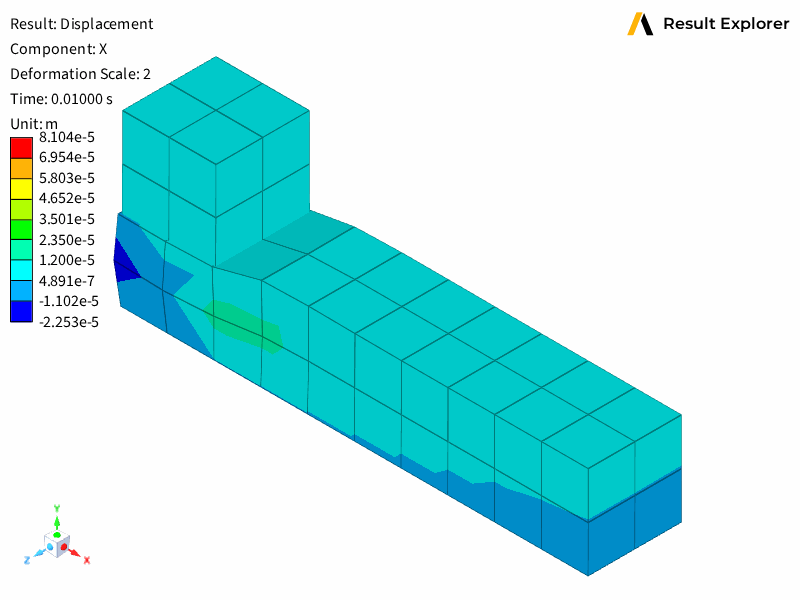

Note
Go to the end to download the full example code.
Customize plot display options and animate results#
This example demonstrates how to configure plot display options and animate results across time steps in Result Explorer:
Plot view management to find and configure displacement views.
Display options customization for deformation, component selection, and mesh visualization.
Result range control using global min/max settings.
Animation through time steps by updating plot properties dynamically.
This example uses a transient contact analysis result to showcase animation and visualization options across multiple timesteps.
Import the standard library and third-party dependencies.
import imageio
Import the Result Explorer dependencies.
from ansys.result_explorer.core import (
PlotView,
launch_result_explorer,
)
from ansys.result_explorer.core.examples import (
ExampleKeys,
get_example_file,
get_example_snapshot_settings,
)
Launch Result Explorer#
Start a Result Explorer instance for this example.
rx = launch_result_explorer()
Load example data#
Create a solution from the transient contact analysis data.
rst_path = get_example_file(ExampleKeys.RST_CP_TRANSIENT)
sol = rx.create_solution(
name="Contact Transient Analysis",
file_path=rst_path,
)
print(f"Created solution:\n{sol}")
Created solution:
======================================================================
Solution: Contact Transient Analysis
======================================================================
ID: 7d2b7871-1c03-46c9-8b0e-a550e81d2d31
Description: N/A
Status:
Ready: Yes
Live: No
Result Files:
- /home/runner/work/pyresultexplorer/pyresultexplorer/tests/data/cp_trans/file.rst (key: rst)
Analysis Information:
Physics Type: mechanical
Analysis Type: transient
Solver Version: 24.2
Unit System: MKS: m, kg, N, s, V, A, degC
Mesh Information:
Num Elements: 122
Num Nodes: 406
Num Named Selections: 13
Num Bodies: 10
Distance Unit: m
Results Information:
Num Sets: 15
Available Results: 24
Time/Freq Unit: s
Available Plot Results:
Displacement
- total_displacement
- displacement [X, Y, Z]
Stress
- stress_tensor [XX, YY, ZZ, XY, YZ, XZ]
- equivalent_von_mises_stress
- principal_stress_1 [1]
- principal_stress_2 [2]
- principal_stress_3 [3]
Velocity
- total_velocity
- velocity [X, Y, Z]
Acceleration
- total_acceleration
- acceleration [X, Y, Z]
Temperature
- temperature
Heat Flux
- total_heat_flux
- heat_flux [X, Y, Z]
Structural Temperature
- structural_temperature
Contact
- contact_status
- contact_pressure
- contact_penetration
- contact_sliding_distance
- contact_gap_distance
- contact_friction_stress
- contact_total_stress
- contact_fluid_penetration_pressure
- contact_surface_heat_flux
Newton Raphson Residual
- total_force
- total_moment
User Defined
Solver Text Outputs (Logs):
- solve.out
- file.err
- file.gst
- file.cnd
======================================================================
Find and configure a plot view#
Locate the displacement view and configure it to show all time steps.
views = sol.plot_views
disp_view: PlotView = next((v for v in views if "Displacement" in v.name), None)
assert disp_view is not None, "Displacement view not found in solution"
disp_view.definition.all_sets = True
disp_view.definition.last_set = False
sol.update_plot(disp_view.definition)
print(f"Found displacement view: {disp_view.name}")
Found displacement view: Displacement
Create workspace and assign view#
Create a workspace and assign the displacement view to a viewport.
workspace = rx.create_workspace(name="Plot Viewports")
print(f"Created workspace with {len(workspace.viewport_ids)} viewports (2x1 grid)")
disp_viewport = workspace.viewports[0]
disp_viewport = disp_viewport.set_view(disp_view, wait=True)
Created workspace with 1 viewports (2x1 grid)
Customize display options#
Configure plot display options including deformation scale and mesh edges.
with disp_viewport.update_display_options() as disp_opts:
disp_opts.result_options.use_global_min_max = True
disp_opts.result_options.component_index = 0
disp_opts.result_options.deformation_scale = 2
disp_opts.result_options.legend_range = None # auto-range based on current component values
disp_opts.show_mesh_edges = True
# Save thumbnail image
disp_viewport.save_snapshot(
file_path="011-plot-display-options-set-1.png", settings=get_example_snapshot_settings()
)
Animate through time steps#
Animate the displacement plot across all available time steps and save as a GIF.
time_frequencies = sol.time_frequencies
print(f"Animating over {len(time_frequencies)} time steps...")
with imageio.get_writer("011-plot-display-options.gif", mode="I") as writer:
for i, tf in enumerate(time_frequencies):
print(f" Step {i}: set_id={tf.set_id}, value={tf.value}")
with disp_viewport.update_display_options() as opts:
# Update the set_id to change the displayed time step
opts.result_options.set_id = tf.set_id
meta = disp_viewport.metadata
for extreme in [meta.active_result.min, meta.active_result.max]:
print(f" entity={extreme.entity_id}, value={extreme.value}, pos={extreme.position}")
snapshot_data = disp_viewport.take_snapshot(settings=get_example_snapshot_settings())
image = imageio.imread(snapshot_data)
writer.append_data(image)
rx.stop()

Animating over 15 time steps...
Step 0: set_id=1, value=0.009999999776482582
entity=362, value=-1.9300379790365696e-05, pos=(0.0, 0.0002500000118743628, 0.0010000000474974513)
entity=7, value=8.104425796773285e-05, pos=(0.0010000000474974513, 0.0020000000949949026, 0.0010000000474974513)
/home/runner/work/pyresultexplorer/pyresultexplorer/examples/011-plot-display-options.py:131: DeprecationWarning: Starting with ImageIO v3 the behavior of this function will switch to that of iio.v3.imread. To keep the current behavior (and make this warning disappear) use `import imageio.v2 as imageio` or call `imageio.v2.imread` directly.
image = imageio.imread(snapshot_data)
Step 1: set_id=2, value=0.014579120092093945
entity=362, value=-1.9300379790365696e-05, pos=(0.0, 0.0002500000118743628, 0.0010000000474974513)
entity=7, value=8.104425796773285e-05, pos=(0.0010000000474974513, 0.0020000000949949026, 0.0010000000474974513)
Step 2: set_id=3, value=0.019158240407705307
entity=362, value=-1.9300379790365696e-05, pos=(0.0, 0.0002500000118743628, 0.0010000000474974513)
entity=7, value=8.104425796773285e-05, pos=(0.0010000000474974513, 0.0020000000949949026, 0.0010000000474974513)
Step 3: set_id=4, value=0.024158241227269173
entity=362, value=-1.9300379790365696e-05, pos=(0.0, 0.0002500000118743628, 0.0010000000474974513)
entity=7, value=8.104425796773285e-05, pos=(0.0010000000474974513, 0.0020000000949949026, 0.0010000000474974513)
Step 4: set_id=5, value=0.02915824018418789
entity=362, value=-1.9300379790365696e-05, pos=(0.0, 0.0002500000118743628, 0.0010000000474974513)
entity=7, value=8.104425796773285e-05, pos=(0.0010000000474974513, 0.0020000000949949026, 0.0010000000474974513)
Step 5: set_id=6, value=0.034158241003751755
entity=362, value=-1.9300379790365696e-05, pos=(0.0, 0.0002500000118743628, 0.0010000000474974513)
entity=7, value=8.104425796773285e-05, pos=(0.0010000000474974513, 0.0020000000949949026, 0.0010000000474974513)
Step 6: set_id=7, value=0.03915823996067047
entity=362, value=-1.9300379790365696e-05, pos=(0.0, 0.0002500000118743628, 0.0010000000474974513)
entity=7, value=8.104425796773285e-05, pos=(0.0010000000474974513, 0.0020000000949949026, 0.0010000000474974513)
Step 7: set_id=8, value=0.04415823891758919
entity=362, value=-1.9300379790365696e-05, pos=(0.0, 0.0002500000118743628, 0.0010000000474974513)
entity=7, value=8.104425796773285e-05, pos=(0.0010000000474974513, 0.0020000000949949026, 0.0010000000474974513)
Step 8: set_id=9, value=0.0491582415997982
entity=362, value=-1.9300379790365696e-05, pos=(0.0, 0.0002500000118743628, 0.0010000000474974513)
entity=7, value=8.104425796773285e-05, pos=(0.0010000000474974513, 0.0020000000949949026, 0.0010000000474974513)
Step 9: set_id=10, value=0.05415824055671692
entity=362, value=-1.9300379790365696e-05, pos=(0.0, 0.0002500000118743628, 0.0010000000474974513)
entity=7, value=8.104425796773285e-05, pos=(0.0010000000474974513, 0.0020000000949949026, 0.0010000000474974513)
Step 10: set_id=11, value=0.059158239513635635
entity=362, value=-1.9300379790365696e-05, pos=(0.0, 0.0002500000118743628, 0.0010000000474974513)
entity=7, value=8.104425796773285e-05, pos=(0.0010000000474974513, 0.0020000000949949026, 0.0010000000474974513)
Step 11: set_id=12, value=0.06415823847055435
entity=362, value=-1.9300379790365696e-05, pos=(0.0, 0.0002500000118743628, 0.0010000000474974513)
entity=7, value=8.104425796773285e-05, pos=(0.0010000000474974513, 0.0020000000949949026, 0.0010000000474974513)
Step 12: set_id=13, value=0.06915824115276337
entity=362, value=-1.9300379790365696e-05, pos=(0.0, 0.0002500000118743628, 0.0010000000474974513)
entity=7, value=8.104425796773285e-05, pos=(0.0010000000474974513, 0.0020000000949949026, 0.0010000000474974513)
Step 13: set_id=14, value=0.07415824383497238
entity=362, value=-1.9300379790365696e-05, pos=(0.0, 0.0002500000118743628, 0.0010000000474974513)
entity=7, value=8.104425796773285e-05, pos=(0.0010000000474974513, 0.0020000000949949026, 0.0010000000474974513)
Step 14: set_id=15, value=1.0
entity=362, value=-1.9300379790365696e-05, pos=(0.0, 0.0002500000118743628, 0.0010000000474974513)
entity=7, value=8.104425796773285e-05, pos=(0.0010000000474974513, 0.0020000000949949026, 0.0010000000474974513)
Total running time of the script: (0 minutes 33.600 seconds)